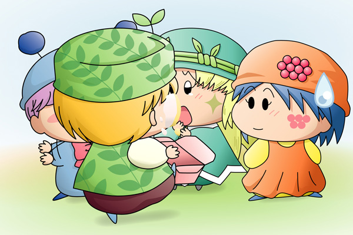

アロマ＆リーネ「ポーロくんっ、
お誕生日おめでとう！」
家の扉を開けたポーロは、突然の二人のお客さんに驚きました。
アロマ「今日はポーロくんのお誕生日だからケーキを焼いてきたの」
ポーロ「わぁ、ありがとう！
ボクの誕生日を覚えていてくれたんだね」
アロマ「ええ」
ポーロ「じゃあ今日は天気がいいからアロマちゃんのケーキを囲んで
公園でパーティーをやろうよ！
もちろんリーネちゃんも一緒にね」
リーネ「う、うん」
ポーロ「せっかくだからもっと友達を呼ぼう。
ムルモくんはどうかなぁ」
アロマ「それはいいアイディアだわ！
私からムルモ様を誘ってみるね」
ポーロ「うん、それじゃあみんなで広場の公園へ出発～♪」
アロマ＆リーネ「お～！」
ムルモ「ポーロしゃんお誕生日おめでとうでしゅ」
ポーロ「ありがとう、ムルモくん」
とはいえ、メンバーを揃える理由で呼び出されたムルモはちょっぴりご機嫌斜め。
ムルモ「アロマしゃんとリーネしゃん（とポーロしゃん（小声））の
パーティーに参加できてボクはうれしいでしゅ」
ポーロ「・・・」
公園で４人は歌を歌いながらダンスを踊ったりしました。
ポーロ「そろそろアロマちゃんのケーキを食べようか」
ムルモ「賛成でしゅ」
リーネ「そ、そうね」
アロマがポーロにケーキを手渡します。
緊張とうれしさの反面、ドジな性格からか少し心配性になっているようです。
アロマ「料理はあまり得意じゃないんだけど・・・」
ポーロ「ううん、そんなことないと思うよ」
とケーキの箱を開けた瞬間、
パンッ！
ケーキがポーロの顔をめがけて吹っ飛びました。
ポーロ「わっ」
アロマ「え・・・？」
ムルモ「！・・・」
リーネ「・・・」
アロマ「ポ、ポーロくん、だ、大丈夫？」
ポーロ「・・・・・・う、うん」
ムルモ「ほえぇぇぇ、アロマしゃんのケーキが～～っ」
リーネ「早くこのハンカチでお顔を拭いて…」
アロマ「ごめんなさい、ごめんなさい・・・」
ポーロ「アロマちゃん、そんなに謝らなくていいよ」
あの後パーティーがいったいどんな風に終わったのか、後になってアロマが思い出そうとしても何も思い出すことが出来ず……しかし涙で目がとても痛くなったことだけはしっかりと覚えていたのでした。
|
前回のアンケート結果を元に絵を描いてみました。リーネが仕掛けた罠とは？を問うアンケートでしたが、「箱を開けた瞬間、ケーキがポーロの顔めがけて吹っ飛ぶ」というなかなか悲惨な罠に一番票が多く集まりました。顔にケーキ…と言えばコントの定番ですが、もちろんアロマにとっては笑っていられる状況ではないですよね。 ケーキ攻撃を喰らったのがミルモやヤシチだったら激怒しそうな気がしますが、そこは心優しいポーロなので紳士的にそしてフォローも忘れずに、でしょうね。ムルモは完全に脇役に徹していただきました（絵も隠れちゃっているし）。すべてが計画通りのリーネの気持ちは皆さんのご想像にお任せします～。今回は４者４様の絵を描くのに苦労しました。 さて今回もその後の展開についてアンケートを取りますね。ちゃんとお話をまとめられるか心配になってきた今日この頃…皆さんぜひたくさん投票してくださいね。 |
(2006/8/26)